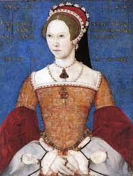
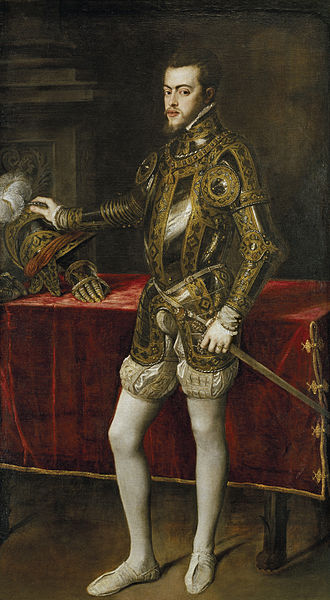

The Tudor's
back

Queen Mary I
Reign: 1553 - 1558
Key Facts.
Birth: 18th Feb 1516, Greenwich.
Father: Henry VIII.
Mother: Catherine of Aragon.
Accession: 19th July 1553.
Coronation: 1st Oct 1553.
Husband: Philip II of Spain (m.25th July 1554; d.1598
Succeeded by: Her sister Elizabeth I.
Greatest Achievement: England’s first reigning Queen.
Key Dates.
25th Jan 1554: Kentish rebels attack London.
30th Nov 1554: Cardinal Reginald Pole absolves England following dispute with Papacy.
Aug 1555: King Philip abandons Mary and leaves for Netherlands.
7th Jan 1558: France retakes Calais.
Death: 17th Nov 1558, London.
History.com Link
Philip II of Spain
